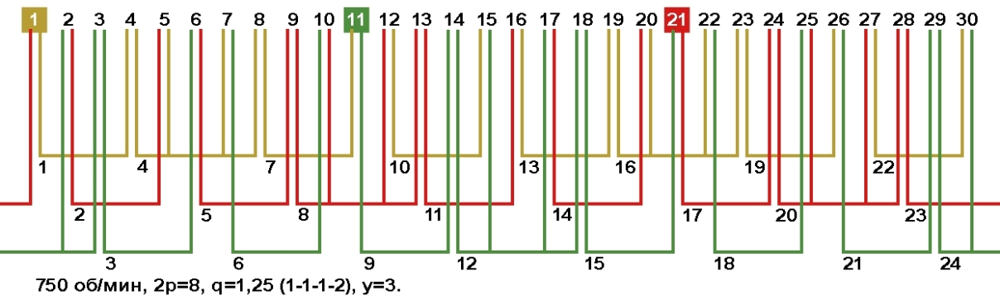
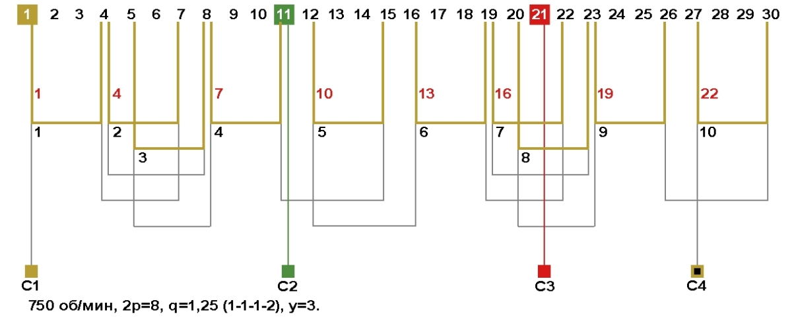
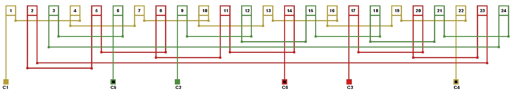

Перейти на главную страницу справочника.
Экономия провода при ремонте электродвигателей.
- Известно, что при переходе с однослойной обмотки на двухслойную с укороченным шагом мы получаем экономию провода. При укорочении шага по пазам уменьшается вылет лобовой части обмотки за счёт чего и появляется экономия меди.
- Как выбрать однослойную схему укладки, для уменьшения вылета лобовой части и экономии провода?
Для примера возьмём двигатель с количеством пазов Z1=36, 1500 об/мин, у=11;9;7.
- Что бы узнать какая из однослойных схем для двигателей Z1=36, 1500 об/мин более экономичная по расходу материалов, произведите простой расчёт. По рисунку №1 шаг обмотки по пазам 11;9;7, складываем числа секционных шагов 11+9+7=27. В фазе обмотки две катушки 27×2=54, получилась сумма чисел секционных шагов в фазе 54. Далее выполняем вычисления с другими однослойными схемами.
Рис. 1. Сумма чисел секционных шагов в фазе (11+9+7)×2=54.
Рис. 2. Сумма чисел секционных шагов в фазе (9+9+9)×2=54.
Рис. 3. Сумма чисел секционных шагов в фазе (9+7+7)×2=46.
Рис. 4. Сумма чисел секционных шагов в фазе (8+8+7)×2=46.
Рис. 5. Сумма чисел секционных шагов в фазе (9+9+9)×2=54.
Рис. 6. Сумма чисел секционных шагов в фазе (7+7+7)×2=42.
- Чем меньше сумма чисел секционных шагов в фазе, тем меньше вылет лобовой части обмотки и расход провода. Самая экономичная схема на рисунке №6, но для замены обычной схемы укладки потребуется пересчёт обмотки в сторону увеличения витков в пазу и соответственно уменьшения сечения провода. Схемы на рисунках №3 и №4 позволят сэкономить провод и уменьшить лобовую часть однослойной обмотки без пересчёта обмоточных данных.
Экономия времени при ремонте электродвигателей.
- При ремонте многополюсных электродвигателей очень много времени затрачивается на схему соединений обмотки. Что бы максимально ускорить и облегчить процесс соединения схемы, катушки на намоточном станке мотают пофазно и без разрыва, а укладку в пазы выполняют с учётом пазов начал фаз. Возможное количество параллельных ветвей при такой укладке а=1, соединение фаз в треугольник или звезду.
Для примера возьмём двигатель с количеством пазов Z1=30, 750 об/мин, у=3.
- По рисунку №7 видно, что в каждой фазе обмотки по 8 катушек, 2 катушки двухсекционные и 6 односекционных. Общее количество секций в фазе 10. Мотаем на станке 10 секций без разрыва и укладку в пазы начинаем с паза №1=С1, следующую фазу с паза №11=С2 и последнюю фазу с паза №21=С3. При этом внимательно следите за межкатушечными и межсекционными переходами.
Рис. 7. 
{kind=link}
- На рисунке №8 показана безразрывная схема укладки данного двигателя. Согласно начал фаз по пазам, укладка первой фазы "А" начинается с паза №1. Чтобы не допустить ошибки, пользуйтесь схемой укладки на рисунке №7 и схемой соединения на рисунке №9. Цифры красного цвета на рисунке №8 соответствуют нумерации катушек по рисункам №7 и №9.
- Секции 2;3 и 7;8 по рисунку №8 соответствуют катушкам 4 и 16 по рисунку №7, межсекционный переход в них выполняется как в обычной двухсекционной катушке. Переход между соседними катушками выполняется по схеме на рисунке №9.
Рис. 8. 
{kind=link}
Рис. 9. 
{kind=link}
- Данный способ укладки можно применить к электродвигателям с любым количеством полюсов.
17.03.2015 г.